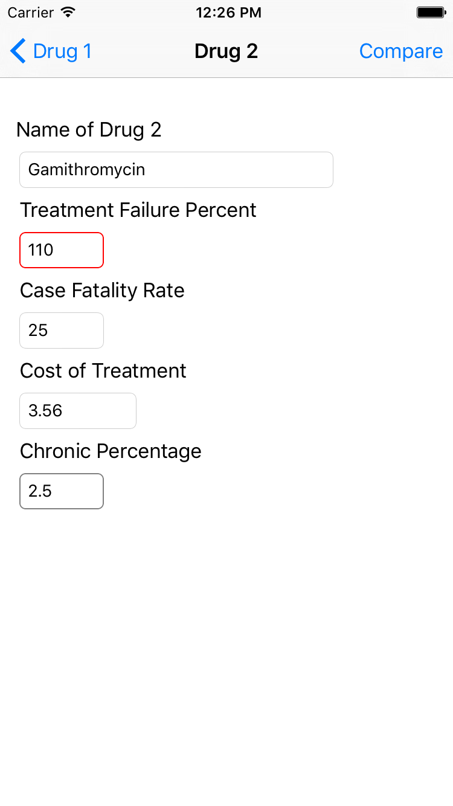
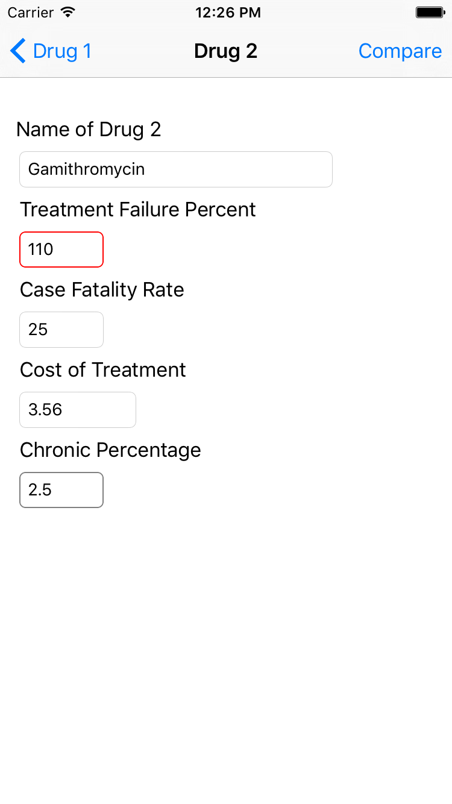

This calculator compares two antimicrobial treatment options based on user-entered values expressed in economic terms. The results of the comparison provides some information but does not provide a recommendation. Please consult your veterinarian to make the most appropriate decision for your operation.
The main screen provides a short description of the app's purpose. Click on the Start button to begin.

|
You will specify 6 different population parameters in this screen. The values provided for each parameter is checked for validity. You can move to the next screen only after entering valid values for all six parameters. The entered data may be used for auto-completion during subsequent uses of the app.
|
|
|
Since the app compares two drugs, it collects information about the drugs in two screens titled Drug 1 and Drug 2. You will specify five different parameters for each drug. The values provided for each parameter is checked for validity. You can move to the next screen only after entering valid values for all five parameters. The entered data may be used for auto-completion during subsequent uses of the app
 



|
The screen shows the results of the comparison -- which of the two drugs is better and by how much.


|
If you have any comments, feedback, or issues, please email them to us at mobile-apps-group@santoslab.org.